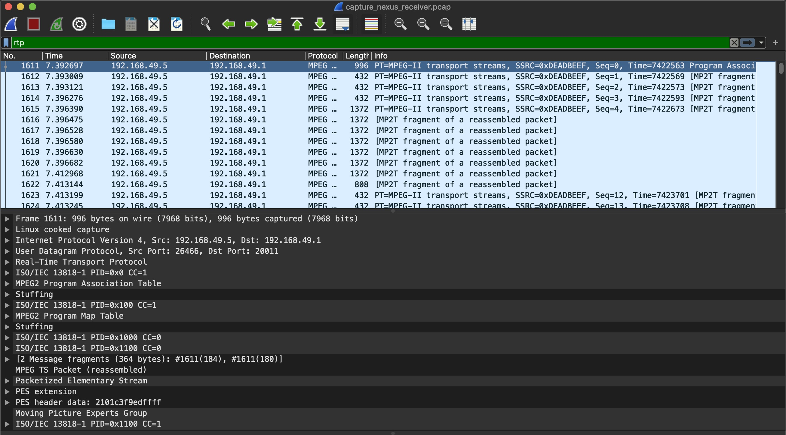
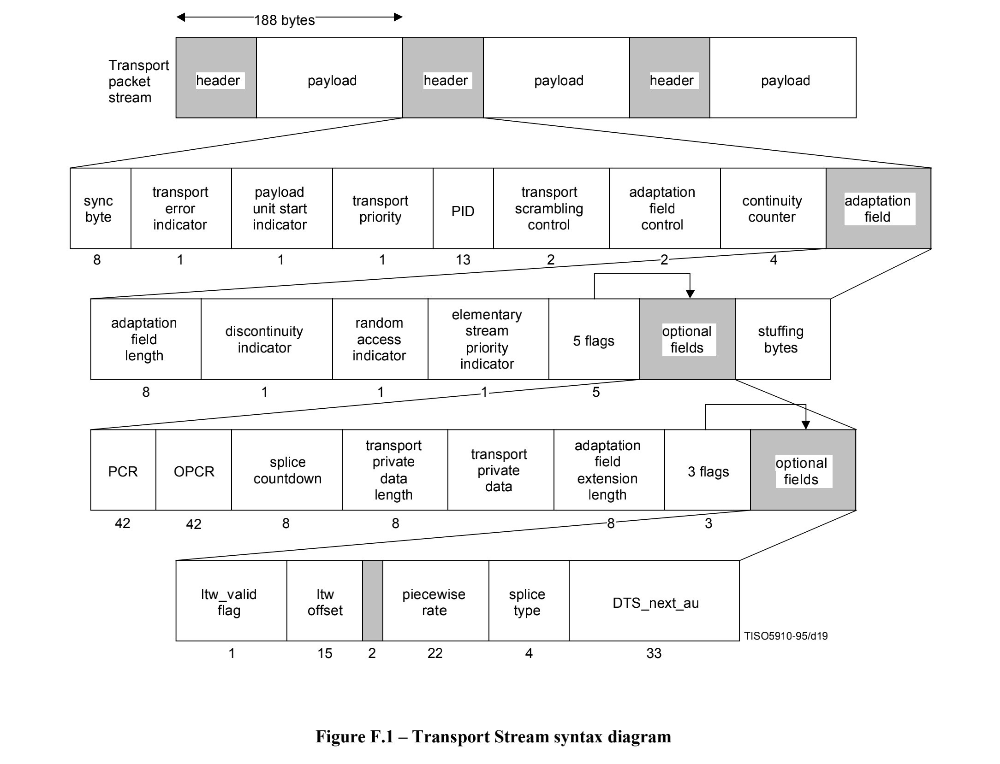
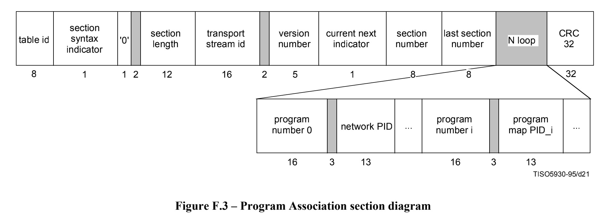
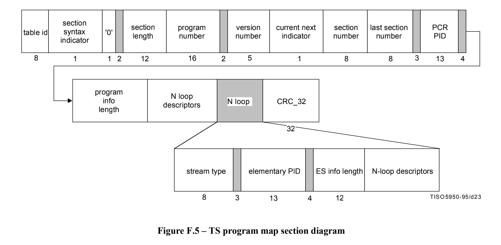
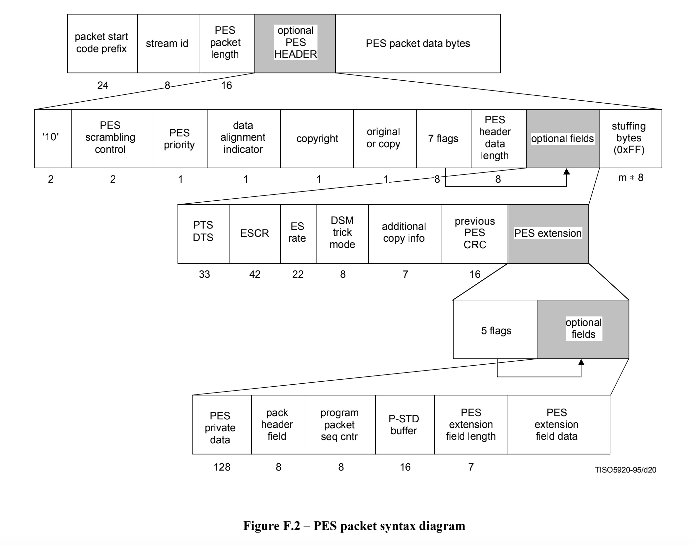

Miracast音视频流概述
在上一篇文章中，我们已经成功完成RTSP能力协商与会话的建立，并准备开始音视频流的传输阶段。那么下一步，就是对音视频流进行解析，并将音视频展示给用户的过程。这样整个Miracast的流程就算分析完毕了。
先简单来总结下，在Miracast底层的实现中，是采用RTP协议对MPEG2-TS数据包进行封装，其中MPEG2-TS又同时封装了Audio和Video两种ES（Elementary Stream）。其中Audio格式一般为AAC，Video则为H.264。那么只要将RTP数据包解析成对应Audio和Video的裸流，那么在上层我们通过MediaCodec或FFmpeg进行解码，即可完成音视频的展示。
而这里的关键，就是如何把RTP的数据包解析出裸流。所以接下来我们会着重对RTP与MPEG2-TS格式进行详细的分析~
抓包准备
跟上篇博客类似，要分析RTP与MPEG2-TS的格式，最好的方法就是抓取RTP的数据包，并对照协议文档一个个字节进行分析。Android上可以采用tcpdump工具抓取UDP的包，然后通过Wireshark工具导入进行分析。在此之前，不要忘记需要在Analyze->Enabled Protocols中勾选RTP/RTCP包及MPEG相关的解析选项。
最终抓取到的数据包如下图所示，通过Wireshark的过滤功能我们可以很方便的过滤RTP协议的数据包：

RTP
实时传输协议（Real-time Transport Protocol）是一个网络传输协议，此协议详细说明了在互联网上传递音频和视频的标准数据包格式。RTP协议常用于流媒体系统（配合RTSP协议），且一般情况下，RTP会搭配RTCP协议一起使用。如：WebRTC与Chromecast底层中的应用。
在通信过程中，音视频的数据是通过RTP包进行传输，RTCP主要用来做数据流控制，如发送/接收端的Report，还有丢包的统计与重传等等…（因为RTP是创建在UDP协议上的）
但经过多台手机的抓包测试，发现抓到的UDP数据中只包含了RTP数据包，而没有发现RTCP数据包，这也是我在测试中发现的非常不符合RTP使用标准的一个现象~ 具体的原因未知，在Miracast Native Sink端的源码中，是有关于RTP与RTCP的相关处理代码的。同时我也反编译了一些Miracast竞品的代码，发现也没有对RTCP进行处理。Anyway，我们这里就先不考虑RTCP的处理，先着重分析RTP数据包格式。
根据rfc3550标准定义，RTP的包头定义如下，在RTP包头之后的所有数据都归属于Payload：
1 | 0 1 2 3 |
由于包头都是标准的，因此解析起来没有啥问题。其中CC包含了CSRC数目，默认为0，也就代表着CSRC为空，前面12个字节一直到SSRC我们都可以通过标准包头解析出来。而后面的Payload数据，则全部属于MPEG2-TS数据包。
MPEG2-TS
MPEG2-TS传输流（MPEG-2 Transport Stream，又称MPEG-TS、MTS、TS）是一种传输和存储包含视频、音频与通信协议各种数据的标准格式，用于数字电视广播系统，如DVB、ATSC、ISDB、IPTV等等。其中1个TS承载多个子TS，通常子TS是分组化基本流（PES, Packetized elementary stream），分组化基本流上又承载着基本流（ES，Elementary Stream）。
TS分组
TS分组（TS Packet），长度固定为188字节，它是基本的传输单位。多个不同的ES的内容会分别被封装到TSP中通过同一个TS传输。每个TS分组以固定的同步字节起始，这个同步字节的值为0x47，它也是TS分组头的一部分。TS分组的固定头长度为4字节，其后为可选部分，为Payload或适配域。格式如下图所示：

TS Packet包头各个字段及解释如下表：
| 名称 | 比特数 | 描述 |
|---|---|---|
| 同步字节（ sync byte） | 8 | 表示TS包的开头，值固定为0x47 |
| 传输错误指示位（Transport Error Indicator） | 1 | 值为1时，表示在相关的传送包中至少有一个不可纠正的错误位 |
| Payload单元开始指示位（Payload Unit Start Indicator） | 1 | 该字段用来表示有效Payload中带有PES包或PSI数据，也代表一个完整的音视频数据帧的开始 |
| 传输优先级（Transport Priority） | 1 | 值为1时，表示此包在相同PID的分组中具有更高的优先级 |
| 分组ID（PID） | 13 | 用于识别TS分组的ID，音视频流分别对应不同的PID |
| 传输加扰控制（Transport Scrambling control） | 2 | 值为0时表示Payload未加密，Miracast中一般为0 |
| 适配域存在标志（Adaptation field exist） | 2 | 表示在包头后面是否有适配域或Payload，其中1代表仅有载荷，2代表仅有适配域，3代表适配域和载荷都存在 |
| 连续性计数器（Continuity counter） | 4 | 对于具有相同PID值的Payload而言，从0~15连续循环，用来检测是否有丢失的TS包 |
如下为PID=0x0的PAT包的Header示例：
1 | ISO/IEC 13818-1 PID=0x0 CC=1 |
适配域
在MPEG2-TS中，为了传送打包后长度不足188B（包括包头）的不完整TS包，或者为了在系统层插入节目时钟参考PCR字段，需要在TS包中插入可变长字节的适配域。适配域包含对较高层次解码功能有用的相关信息，格式基于若干标识符，以表示该字段的某些特定扩展位是否存在。适配域的格式如上图Adaptation Field所示，各个字段及解释如下表：
| 名称 | 比特数 | 描述 |
|---|---|---|
| 适配域长度（Adaptation Field Length） | 8 | 适配域的长度，单位为字节，不包含当前字节 |
| 不连续指示位（Discontinuity indicator） | 1 | 如果根据连续性计数器或PCR计算，确认当前分组处于不连续状态，则取值为1 |
| 随机访问指示位（Random Access indicator） | 1 | 如果当前分组是一个PES的起始，取值为1 |
| ES优先级指示位（Elementary stream priority indicator） | 1 | 取值为1时ES优先级更高 |
| PCR标识（PCR flag） | 1 | 取值为1时表示适配域中有PCR域 |
| OPCR标识（OPCR flag） | 1 | 取值为1时表示适配域中有OPCR域 |
| 接续点标识（Splicing point flag） | 1 | 取值为1时表示适配域中有接续倒数计数器域 |
| 传输私有数据标识 （Transport private data flag） | 1 | 取值为1时表示适配域中有私有数据域 |
| 适配域扩展标识（Adaptation field extension flag） | 1 | 取值为1时表示适配域中有适配域扩展域 |
| （可选）节目时钟参考（PCR，Program Clock Reference） | 33+6+9 | 包括一个33比特的低精度部分（90kHz）+6位的填充部分+一个9比特的高精度部分（27MHz，取值为0-299） |
| … | … | … |
PCR
其中适配域中的节目时钟参考（PCR，Program Clock Reference）使得解码后的内容可以正确地同步播放。PCR通常每隔100ms至少要被传输一次。我们可以从TS分组的适配域中得到特定节目的PCR值，PCR的PID由该节目的PMT中的PCR_PID域指定。
PCR在MPEG-2系统中是非常重要的，因为解码器中的视频和音频抽样时钟都锁定于与PCR所相同的本地时钟，也就是说，视频和音频解码过程能否正常进行，首先取决于解码器能否准确恢复PCR。解码系统应当基于PCR生成高精度的系统定时时钟（System Timing Clock，STC），用于同步声音ES和视频ES的内容。
如下为PID=PCR_PID的TS包头及适配域的情况，其中PCR Flag值为1，在其固定头后紧接着PCR的值：
1 | ISO/IEC 13818-1 PID=0x1000 CC=0 |
PID
表示TS Packet的数据类型，每一种PSI表和每个ES都对应一个PID值。这个PID十分重要，它是辨别码流信息的关键，也是节目信息的唯一标识。除PAT表包的PID永远是0外，还有2种包的PID是协议预留的：一是空包，它主要用作码流填充，PID是0x1FFF；二是条件访问表（CAT），其PID值总是1。PID的分配可使用如下表格进行总结：
| PID值 | PID值用途 |
|---|---|
| 0x0000 | 节目关联表（PAT，Program Association Table） |
| 0x0001 | 条件访问表（CAT，Conditional Access Table） |
| 0x0003 ~ 0x000F | 保留 |
| 0x0010 ~ 0x1FFE | 可分配为network PID，PMT的PID，ES的PID等等… |
| 0x1FFF | 空包 |
PSI
节目专用信息（PSI，Program Specific Information），描述特定节目相关的属性。MPEG-2标准规定了4种PSI：
- 节目关联表（PAT，Program Association Table）
- 节目映射表（PMT，Program Map Table）
- 条件访问表（CAT，Conditional Access Table）
- 网络信息表（NIT，Network Information Table）
其中MPEG-2标准规定了PAT和PMT的具体结构，而且在Miracast Sink端的源码中，也只是用到了PAT和PMT。因此，我们只需对这2种PSI进行分析即可。
PAT
节目关联表（PAT: Program Association Table）列出了该TS内所有节目，其PID固定为0x0000，一般在Miracast中Sink端收到的首包，就会包含PAT。PAT包的格式如下图所示：

如下为PID=0x0的PAT包的Payload示例，其中比较重要的有Program编号与PID的映射关系表，如下编号为1的Program对应的PID为0x0100。拿到了Program的PID后，我们就可以根据PID找到对应的PMT：
1 | MPEG2 Program Association Table |
PMT
节目映射表（PMT: Program Map Table）包含特定节目相关的信息（如：音频、视频ES流），每一个节目有一个PMT，包含特定节目的Program编号、PCR_PID、以及该节目对应的所有ES的PID。PMT包的格式如下图所示：

如下为PID=0x0100的PMT包的Payload示例：
1 | MPEG2 Program Map Table |
经过上述包格式的分析，我们可以得出以下重要信息：
- 可以根据PAT中Program编号与PID的映射关系表，对比Program编号，值为0x0001与期望一致，是匹配的Program。
- 紧接着我们可以得到
PCR_PID的值为0x1000，后续只要收到PID为该值的TS包，则可以解析出PCR信息。 - 最后，我们可以看到该PMT中包含2个ES流，PID分别为
0x1011与0x1100，分别对应了H.264(0x1b)的视频流与AAC(0x0f)音频流。
PES
分组化基本流（PES, Packetized elementary stream）组合了多个音频与视频ES流，一个PES包其实就是一帧音视频。但一个TS包只有188B的大小，是不可能放下一帧数据的。所以如果我们要获得一帧完整的数据，就需要把连续几个TS包里的数据全部取出来，才能组合成一个PES包。那么我们怎么知道该从哪里开始到哪里结束是一个PES包呢？
前面TS分组章节我们分析了分组格式，里面有一个Payload Unit Start Indicator字段，值为1时代表一个完整的音视频数据包的开始。那么从这里开始，直到下一个值为1的包为止（相同PID的ES流），把所有的这些TS包组合起来就是一个PES包。
有关PES包的格式，如下图所示：

在这个PES结构中，最重要的部分是解码时间标记DTS（Decode Time Stamp）和播出时间标记PTS（Presentation Time Stamp）。有了DTS和PTS，解码器就可以从编码器传送的I、B与P帧中重建视频流。即DTS告诉解码器何时解码帧，而PTS则告诉解码器何时显示帧。
以下为PID=0x1011的某个视频PES包的示例：（已完成TS包的重新组装，总共11个TS包）
1 | [11 Message fragments (1928 bytes): #1649(184), #1649(184), #1649(184), #1649(184), #1649(184), #1649(184), #1649(184), #1650(184), #1650(184), #1650(184), #1650(88)] |
其中pts-flag: True，我们可以从PES header data前5个字节取出PTS，剩下的字节则为PES data，也就是一帧裸流数据。 剩下的工作就是把视频流数据送到应用层做解码，然后展示，整个过程结束~
总结
从RTP数据包解析出音视频的裸流，主要经过以下几个步骤：
- 解析RTP固定12字节头，取出其后的Payload数据（MPEG2-TS包）
- 以188B的大小裁剪出N个TS包
- 解析TS包，查找
PID=0的PAT包并解析，得到PMT的PID - 根据PID查找到PMT包并解析，得到
PCR_PID与音视频ES流的PID - 根据音视频ES流的PID解析出对应的音视频TS包
- 根据
Payload Unit Start Indicator字段，组装同一个PES下的TS包 - 对完整的PES包进行解析，得到
PTS/DTS与最终的音视频裸流数据，流程结束
参考
- 《数字电视业务信息及其编码》- 方涛 编著
- ISO_IEC_13818-1_2007_PDF_version_(en).pdf